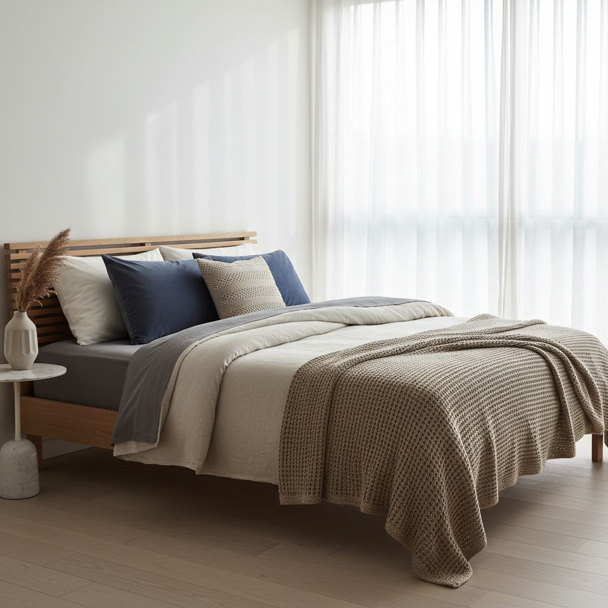

How to Choose Bedding That Actually Feels Good

Bedding marketing is full of numbers that do not mean what shoppers think. Here is what to actually pay attention to.
Sheets: fiber and weave
Long-staple cotton (Egyptian, Supima) and washed linen are the two safest bets. Percale weaves are crisp and cool; sateen weaves are smooth and slightly warmer. Thread counts above roughly 400 rarely add anything you can feel.
Duvets: fill and weight
Down and down-alternative both work. Look at fill weight in grams per square meter (GSM): 200–300 for summer, 300–400 for year-round, 400+ for winter or cold bedrooms.
Pillows by sleep position
- Back sleepers: medium-firm, medium loft.
- Side sleepers: firm, higher loft to fill the shoulder gap.
- Stomach sleepers: soft, low loft to avoid neck strain.

Material Spotlight: Bamboo Lyocell
While cotton and linen often get the most attention, bamboo lyocell is a true game-changer for those seeking unparalleled softness and temperature regulation. Unlike bamboo rayon, which uses a more chemical-intensive process, lyocell is produced using a closed-loop system, making it a more eco-friendly choice. Its fibers are incredibly smooth and round, contributing to a silk-like drape and minimal friction against the skin. This texture is particularly beneficial for sensitive skin or those prone to hair tangling. Bamboo lyocell is also naturally hypoallergenic and resistant to dust mites, making it an excellent option for allergy sufferers. Expect to find sets ranging from $150 to $350 for queen-sized sheets, a worthwhile investment for its durability and luxurious feel. Look for products with a 300-400 thread count for optimal balance of softness and breathability; higher counts aren't always better with this fiber.
The Unsung Hero: The Fitted Sheet
The fitted sheet, often overlooked, is critical to a comfortable night's sleep. The primary mistake I see consistently is purchasing a fitted sheet with inadequate pocket depth. A standard mattress is typically 9-12 inches deep, but many modern pillow-top or memory foam mattresses can be 14-18 inches, or even deeper. Always measure your mattress's actual depth before buying. Look for fitted sheets with a pocket depth of at least two inches more than your mattress depth. For a 14-inch mattress, aim for 16-inch pockets or more. Elastic quality is also paramount; a cheap, weak elastic will inevitably lead to the sheet pulling up at the corners, creating uncomfortable bunches. Look for sheets with strong, continuous elastic around the entire perimeter, not just the corners. Reinforced corners, sometimes with extra elastic bands or straps, are an added bonus that signifies durability and attention to detail. This prevents daily wrestling with your bedding.
Layering for Seasonal Comfort
Achieving year-round comfort requires a strategic layering approach, rather than relying on a single, heavy duvet. Think of your bed as a modular system. Start with your primary duvet, chosen for your typical sleeping temperature. This could be a lightweight down alternative for warmer climates or a medium-weight down for balanced comfort. Then, introduce a flat sheet—an essential barrier for hygiene and an added layer of warmth or coolness. For transitional seasons or fluctuating personal comfort, a quilt or coverlet is invaluable. A cotton quilt around 150-200 GSM provides light warmth without being bulky, perfect for spring or autumn. In winter, an additional fleece or wool blanket, placed between your flat sheet and duvet, creates significant insulation without adding excessive weight or stiffness. This allows you to easily subtract or add layers throughout the night, adapting to your body's needs without completely overhauling your bedding.
The Aesthetic Impact of Top Layering
Beyond comfort, the top layers of your bedding profoundly influence your bedroom's aesthetic. A well-dressed bed feels inviting and complete, transforming the space. Consider the weight and drape of your outermost layers. A crisp, stonewashed linen duvet cover offers a relaxed, casual elegance, while percale provides a sharper, more tailored look. For a plush, hotel-inspired feel, layer a substantial, oversized duvet with a high-quality velvet or matelassé coverlet folded at the foot of the bed. Don't underestimate the power of contrast and texture. If your duvet is smooth, introduce a chunky knit throw. If your sheets are solid, a patterned quilt can add visual interest. The top layer should extend sufficiently to cover the sides of the mattress, ideally by 10-15 inches on each side, for a cohesive, finished appearance. This prevents the bed skirt from being the dominant visible element and creates a sense of luxurious abundance.
Bedding Care Secrets for Longevity
Proper care is paramount for extending the life and maintaining the feel of your bedding. The cardinal rule for almost all natural fibers – cotton, linen, bamboo lyocell – is cold water and a gentle cycle. Heat is the enemy of fabric fibers, causing shrinkage, fading, and accelerated wear. Avoid harsh detergents; opt for a mild, pH-neutral formula. For stains, pre-treat immediately with an enzyme-based stain remover, but avoid chlorine bleach on colored or natural white fabrics, as it degrades fibers. Tumble dry on a low heat setting, or better yet, air dry or hang dry when possible. Remove sheets from the dryer promptly to minimize wrinkles, especially for percale. Ironing, if desired, should be done on a medium setting for cotton and linen. Duvet covers benefit from being turned inside out before washing to protect their exterior. Regular rotation of sheet sets, ideally having two or three on hand, also minimizes wear on individual sets, helping them last many years.
- Wash sheets every 1-2 weeks.
- Always follow care label instructions for specific materials.
- Store clean bedding in breathable bags, not plastic.
One last piece of advice: buy bedding in stages rather than all at once. Start with the sheet set you sleep on most nights, live with it through a full wash cycle or two, and only then add the duvet, coverlet, and decorative shams. Bedding is one of the few decor purchases you evaluate with your body instead of your eyes, and a fabric that felt luxurious in the shop can feel clammy or stiff after three washes. Staging your purchases also spreads the cost, lets you build a layered, collected look instead of a matched set, and means a single disappointing item never derails the whole bed.
Key takeaways
- Look at fiber and weave, not thread count.
- Match duvet GSM to your climate.
- Match pillow loft to your sleep position.
Frequently asked questions
Is linen worth the higher price?
For hot sleepers and warm climates, yes — linen breathes better than any other common bedding fiber. In cold bedrooms it can feel too cool year-round.

Sophia Bennett is a certified interior stylist and the senior editor at Styleire. She has spent more than eight years helping homeowners and renters create warm, functional interiors, with hands-on experience across small city apartments and family homes. Her work has been informed by close collaboration with independent designers, craftspeople, and product testers.
View full profile →Related reading

Cozy Bedroom Ideas: 12 Changes That Actually Make a Difference
Cozy is a feeling built from small, specific choices. Here are the twelve that make the biggest difference.

Small Bedroom Layout Ideas That Free Up Floor Space
A small bedroom does not need to feel cramped. It needs a layout that respects the walking path and the light.